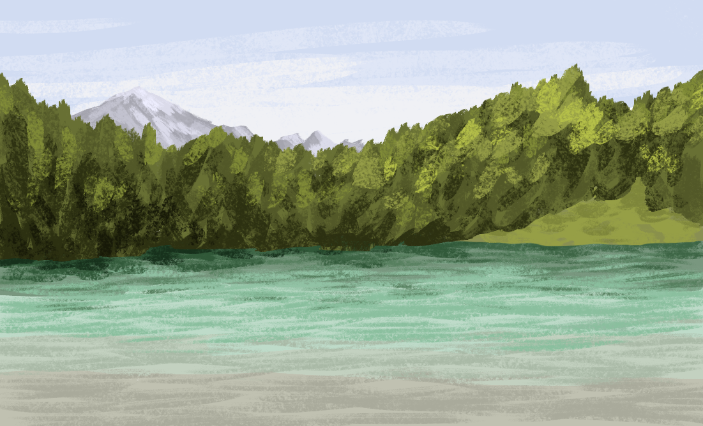
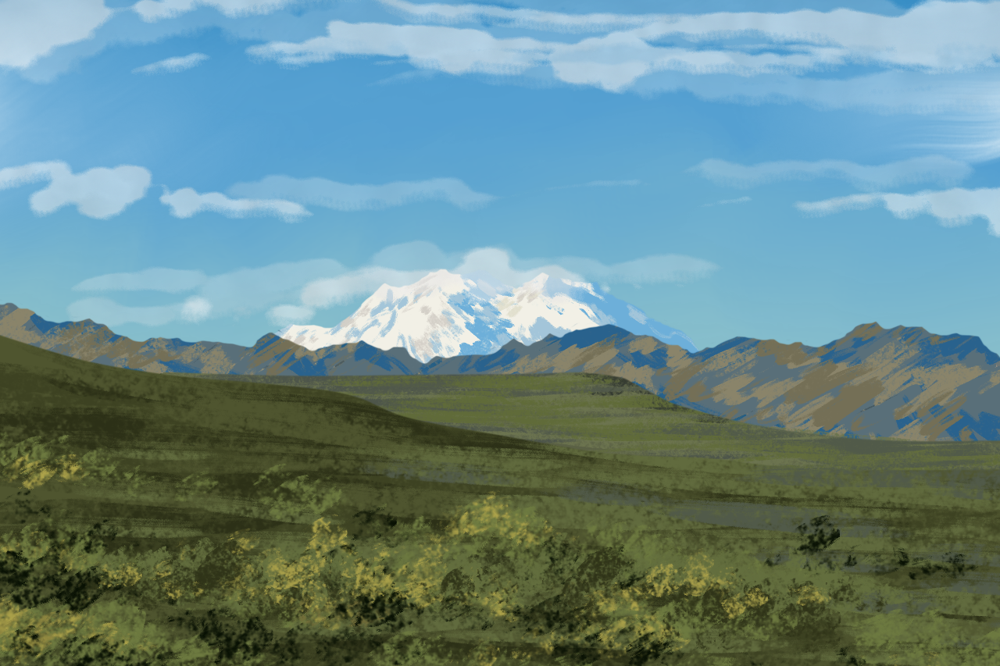
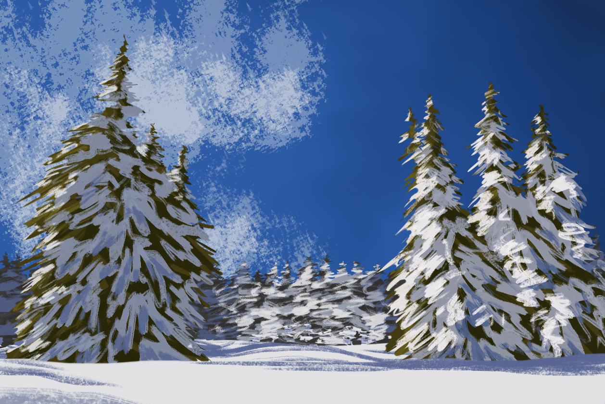
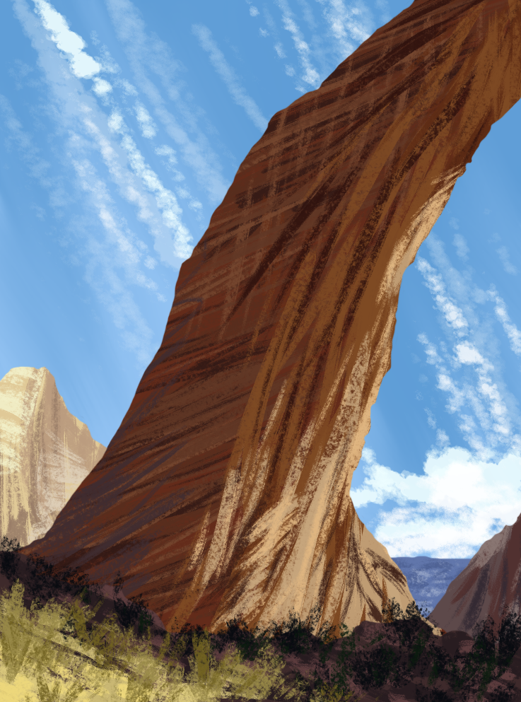
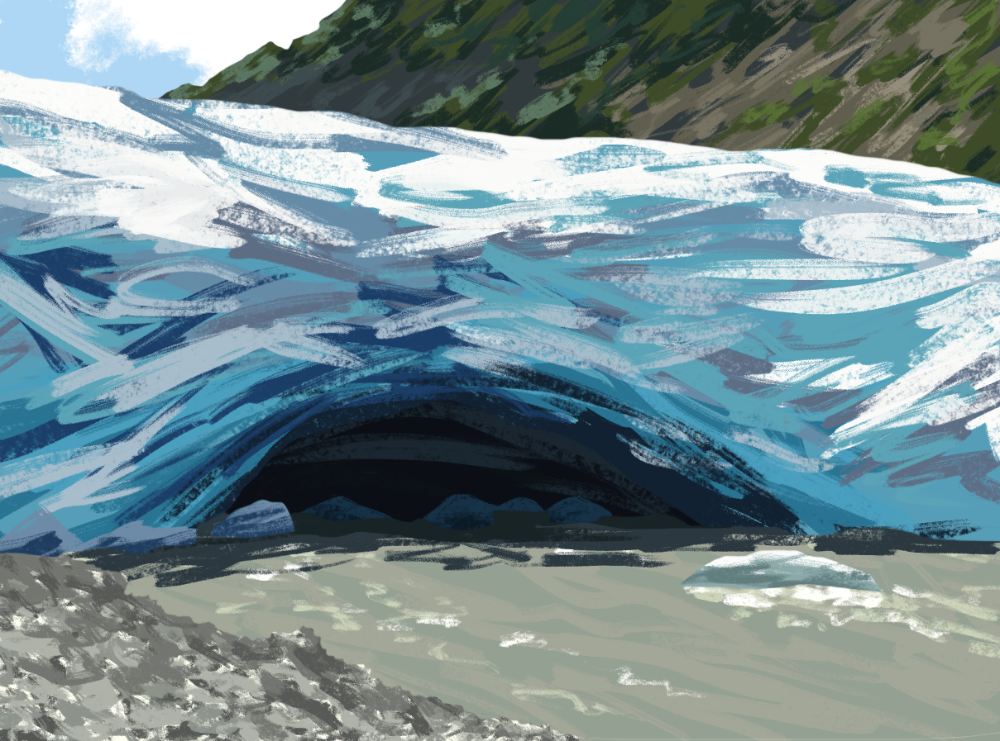
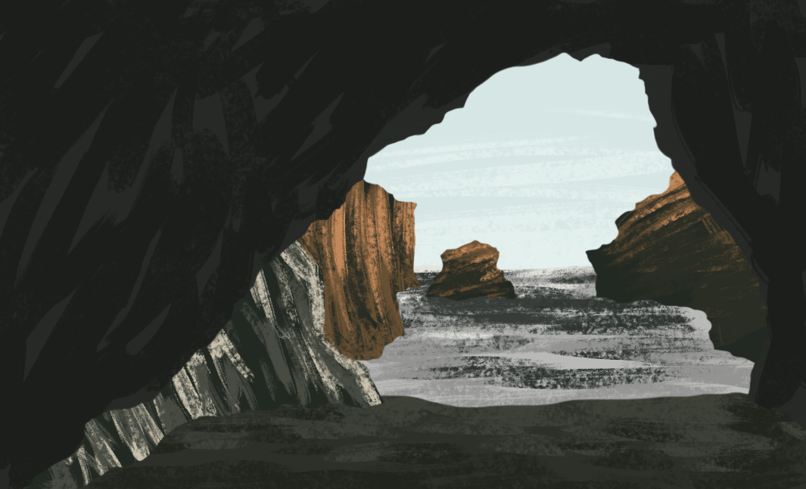

Digital
El estudio del dibujo digital comienza en 2010 a partir de una motivación personal y continúa hasta la fecha. Los principales objetos de estudio son la textura, la luz, el color y los animales.
El estudio del dibujo digital comienza en 2010 a partir de una motivación personal y continúa hasta la fecha. Los principales objetos de estudio son la textura, la luz, el color y los animales.
  
  